Hazel 游戏引擎笔记 020：建立 Hazel 键码与鼠标码
本节来源：The Cherno 游戏引擎系列第 20 讲“键盘和鼠标代码”，时长约 23 分 49 秒。
原课程与 Hazel 代码作者：The Cherno。代码参考提交：6a5e6887。
本文由视频字幕重构、翻译并整理，不是官方教材；术语和代码以原视频及同期 Hazel 仓库为准。
本节目标
上一讲实现了输入轮询，但客户端仍需写：
Input::IsKeyPressed(GLFW_KEY_SPACE);
这意味着使用 Hazel 的客户端必须包含 GLFW 头文件，并依赖 GLFW 的键码定义。GLFW 本来只是 Hazel 的内部平台实现，不应该泄漏到客户端 API。
本讲建立 Hazel 自己的键码和鼠标按钮码：
Input::IsKeyPressed(HZ_KEY_SPACE);
Input::IsMouseButtonPressed(HZ_MOUSE_BUTTON_LEFT);
目标是让客户端只依赖 Hazel，同时为将来更换窗口后端留下转换空间。
graph LR
A[客户端] --> B[Hazel Input API]
B --> C[WindowsInput]
C --> D[GLFW]
📷 客户端不应为了检查按键而依赖 GLFW
回到原视频 (00:01:04)
1. 为什么 GLFW 键码不能成为公共 API
(参考时间: 00:00:20)
当前问题有两层。
1.1 公共 API 泄漏平台依赖
客户端应用只想检查空格键是否按下，却必须包含 GLFW：
#include <GLFW/glfw3.h>
Input::IsKeyPressed(GLFW_KEY_SPACE);
这会把 GLFW 从“Hazel 的内部实现细节”变成“客户端必须了解的依赖”。
1.2 不同窗口后端使用不同键码
GLFW 和 Win32 API 对同一个键可能给出完全不同的数值。例如 Tab：
GLFW_KEY_TAB = 258
VK_TAB = 9
如果 Hazel 将来在 Windows 改为直接使用 Win32，而在其它平台继续使用 GLFW，旧的 GLFW 常量就无法直接复用。
需要选择一种长期稳定的内部编码，并在访问具体后端时完成转换。否则每个调用点都会被后端差异污染。
flowchart TD
A[同一个逻辑按键 Tab] --> B[GLFW: 258]
A --> C[Win32: 9]
B --> D[后端实现差异]
C --> D
D --> E[必须在 Hazel 内部统一]
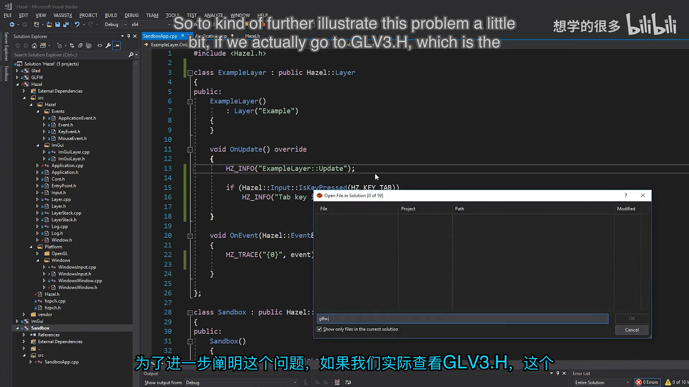
📷 GLFW 的 Tab 键码为 258，而 Win32 的 VK_TAB 为 9
回到原视频 (00:05:41)
2. 创建 KeyCodes.h
(参考时间: 00:06:49)
新增：
Hazel/src/Hazel/KeyCodes.h
最直接的做法是复制 GLFW 已定义好的键值，但把宏前綴从 GLFW_ 改成 HZ_。例如：
#pragma once
// From glfw3.h
#define HZ_KEY_SPACE 32
#define HZ_KEY_APOSTROPHE 39
#define HZ_KEY_COMMA 44
#define HZ_KEY_MINUS 45
#define HZ_KEY_PERIOD 46
#define HZ_KEY_SLASH 47
#define HZ_KEY_0 48
#define HZ_KEY_1 49
#define HZ_KEY_2 50
#define HZ_KEY_3 51
#define HZ_KEY_4 52
#define HZ_KEY_5 53
#define HZ_KEY_6 54
#define HZ_KEY_7 55
#define HZ_KEY_8 56
#define HZ_KEY_9 57
#define HZ_KEY_A 65
#define HZ_KEY_B 66
#define HZ_KEY_C 67
// ...
完整文件还包括：
- 字母、数字和符号键；
- 左右 Shift、Ctrl、Alt、Super；
- Escape、Enter、Tab、Backspace；
- 方向键、Page、Home、End；
- F1 到 F25；
- 小键盘数字与运算键。
文件中保留了来源注释：
// From glfw3.h
这是为了避免以后忘记这些数值的来源。
2.1 为什么不完全重新发明一套数值
可以随意指定：
HZ_KEY_A = 10000
HZ_KEY_B = 10001
但这样没有任何直接收益，反而会让当前 GLFW 后端也需要额外转换。
直接复用 GLFW 的数值，同时使用 Hazel 的名字，可以得到两个结果：
- 客户端不再直接依赖 GLFW 常量；
- 当前 GLFW 后端因为数值一致，暂时不需要运行时转换。
这是一种渐进式隔离：先把依赖从公共 API 中移走，再在真正更换后端时补上转换层。
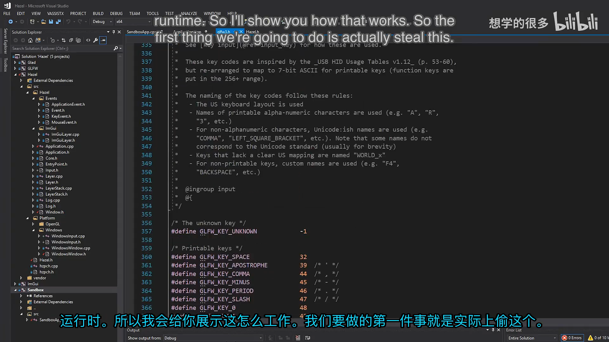
📷 在 KeyCodes.h 中复制 GLFW 键值并重命名为 HZ_KEY
回到原视频 (00:06:49)
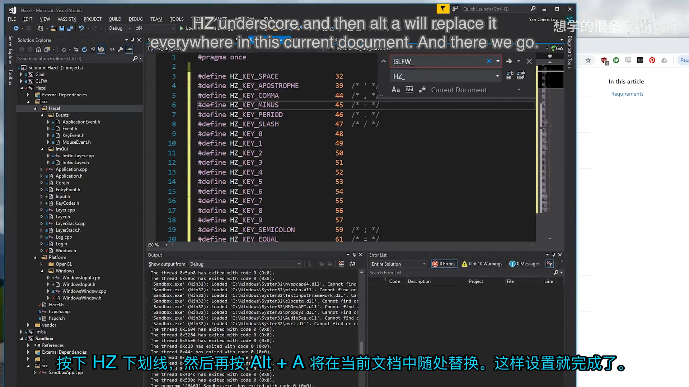
📷 将 GLFW_ 前缀统一替换为 HZ_
回到原视频 (00:07:31)
3. HZ_KEY_SUPER 与键盘语义
GLFW 使用 SUPER 表示系统级修饰键：
- Windows 上是 Windows 键；
- macOS 上是 Command 键；
- Linux 桌面环境中通常映射为 Super 键。
因此不把它改名为 WINDOWS_KEY。Hazel 目标是跨平台，键名也应描述功能而不是某一个操作系统。
左右修饰键分别保留：
#define HZ_KEY_LEFT_SHIFT 340
#define HZ_KEY_LEFT_CONTROL 341
#define HZ_KEY_LEFT_ALT 342
#define HZ_KEY_LEFT_SUPER 343
#define HZ_KEY_RIGHT_SHIFT 344
#define HZ_KEY_RIGHT_CONTROL 345
#define HZ_KEY_RIGHT_ALT 346
#define HZ_KEY_RIGHT_SUPER 347
4. 创建 MouseButtonCodes.h
(参考时间: 00:08:24)
鼠标按钮采用同样方式：
#pragma once
// From glfw3.h
#define HZ_MOUSE_BUTTON_1 0
#define HZ_MOUSE_BUTTON_2 1
#define HZ_MOUSE_BUTTON_3 2
#define HZ_MOUSE_BUTTON_4 3
#define HZ_MOUSE_BUTTON_5 4
#define HZ_MOUSE_BUTTON_6 5
#define HZ_MOUSE_BUTTON_7 6
#define HZ_MOUSE_BUTTON_8 7
#define HZ_MOUSE_BUTTON_LAST HZ_MOUSE_BUTTON_8
#define HZ_MOUSE_BUTTON_LEFT HZ_MOUSE_BUTTON_1
#define HZ_MOUSE_BUTTON_RIGHT HZ_MOUSE_BUTTON_2
#define HZ_MOUSE_BUTTON_MIDDLE HZ_MOUSE_BUTTON_3
这样客户端可以写：
Input::IsMouseButtonPressed(
HZ_MOUSE_BUTTON_LEFT);
不必知道 GLFW 把左键定义成整数 0。
GLFW 还有一些 modifier flags，但现代 GLFW 已经不再让用户主动传递这些 flags，因此本讲暂时不复制它们；将来确实需要时再补。
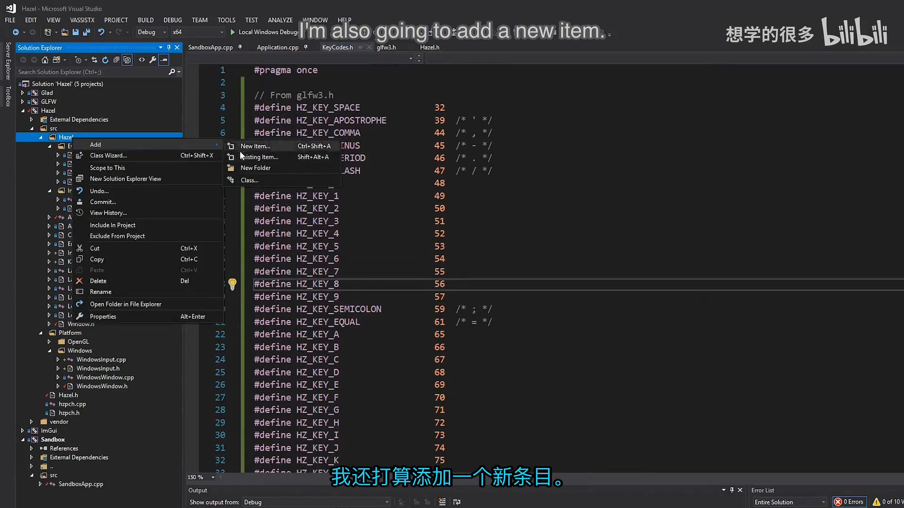
📷 从 GLFW 鼠标按钮定义建立 HZ_MOUSE_BUTTON 宏
回到原视频 (00:08:24)
5. 通过 Hazel.h 暴露给客户端
(参考时间: 00:09:07)
Hazel.h 作为客户端总入口，增加：
#include "Hazel/Input.h"
#include "Hazel/KeyCodes.h"
#include "Hazel/MouseButtonCodes.h"
客户端现在只需要：
#include <Hazel.h>
就可以访问 Input API 与 Hazel 键码，不再需要：
#include <GLFW/glfw3.h>
graph TD
A[客户端 Sandbox] --> B[Hazel.h]
B --> C[Input.h]
B --> D[KeyCodes.h]
B --> E[MouseButtonCodes.h]
C --> F[WindowsInput]
F --> G[GLFW]
注意：GLFW 仍然是被 Hazel 平台层使用的实现依赖，只是不再出现在客户端源码中。
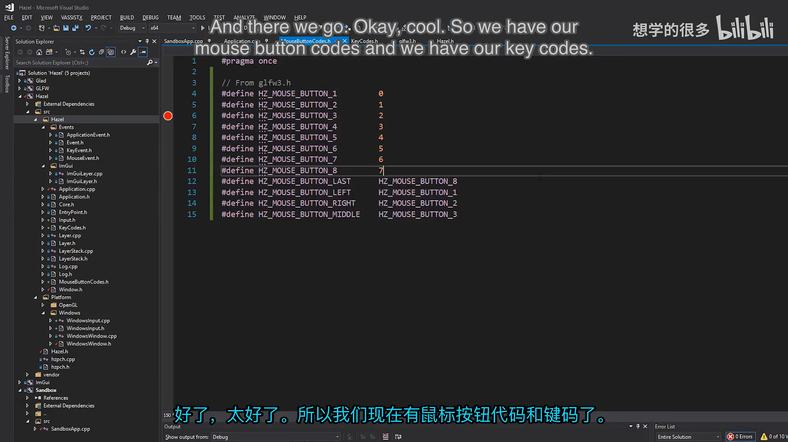
📷 Hazel.h 统一公开 Input、KeyCodes 和 MouseButtonCodes
回到原视频 (00:09:07)
6. 在 Sandbox 中验证
(参考时间: 00:09:45)
ExampleLayer 可以使用 Hazel 键码测试轮询：
void OnUpdate() override
{
if (Input::IsKeyPressed(HZ_KEY_TAB))
HZ_TRACE("Tab key is pressed (poll)!");
}
运行 Sandbox 后，按住 Tab 键就能持续看到 Tab key is pressed (poll)!。
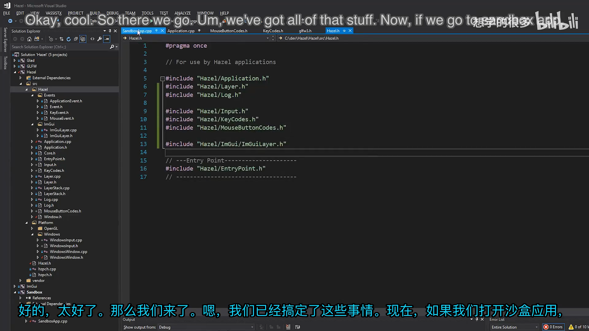
📷 用 HZ_KEY_TAB 测试输入轮询
回到原视频 (00:09:45)
6.1 在事件系统中也使用 Hazel 键码
除了轮询，Hazel 事件也可以直接与 HZ_KEY_* 比较：
void OnEvent(Event& event) override
{
if (event.GetEventType() == EventType::KeyPressed)
{
KeyPressedEvent& e =
static_cast<KeyPressedEvent&>(event);
if (e.GetKeyCode() == HZ_KEY_TAB)
HZ_TRACE("Tab key is pressed (event)!");
HZ_TRACE("{0}", (char)e.GetKeyCode());
}
}
这里的 static_cast 比 C 风格强制转换更明确地表达事件类型检查后的向下转换。
官方提交中使用了 C 风格转换，本段为便于理解改用 static_cast；运行语义相同。
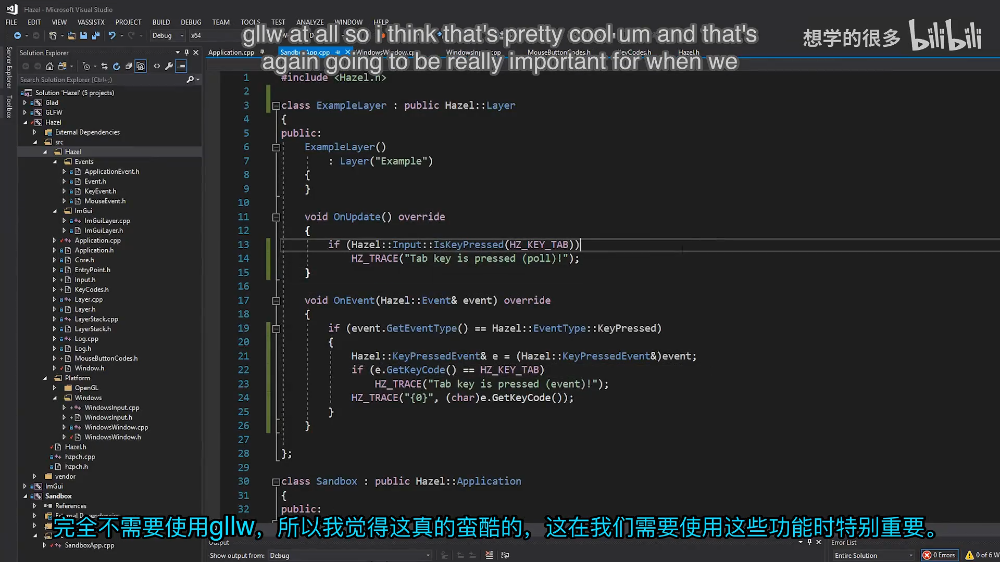
📷 事件处理函数中用 HZ_KEY_TAB 比较事件键码
回到原视频 (00:20:30)
7. 后端切换时如何转换键码
(参考时间: 00:10:33)
现在 Hazel 键码与 GLFW 数值相同，所以 GLFW 后端不需要转换。但未来如果 Windows 改用 Win32，就可能需要把 Hazel 键码和 Win32 虚拟键码互相转换。
主要有两种方案。
7.1 编译时选择平台键值
在头文件中根据目标平台定义不同的数值：
概念示意：
#ifdef HZ_PLATFORM_WINDOWS
#define HZ_KEY_TAB 9
#else
#define HZ_KEY_TAB 258
#endif
优点：
- 运行时没有转换成本；
- 调用点最简单。
缺点：
- 同一逻辑键在不同平台具有不同数值；
- 如果保存按键映射或输入配置，跨平台文件不兼容。
例如 Windows 上保存 Tab 为 9，把配置文件复制到 macOS 后，macOS 认为 Tab 是 258，原设置无法直接使用。
flowchart TD
A[HZ_KEY_TAB] --> B{编译平台}
B -- Windows --> C[9]
B -- macOS/Linux --> D[258]
C --> E[保存配置后跨平台不兼容]
D --> E
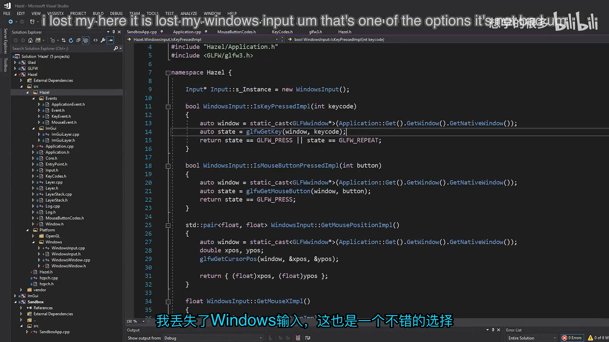
📷 编译时平台键码的数值与序列化兼容问题
回到原视频 (00:12:43)
7.2 运行时执行转换
让 Hazel 键码始终保持统一定义，当调用具体后端时再转换：
后端事件 -> GLFW key -> Hazel key
Hazel key -> GLFW key -> 后端轮询
例如事件方向需要一个：
GLFWKeyToHZKey(glfwKey)
轮询方向需要：
HZKeyToGLFWKey(hzKey)
两者都可以通过查表实现。
运行时会增加一次查找，但 Cherno 认为这不会成为游戏引擎的性能瓶颈。相比少量查找开销，按键映射的跨平台可移植性更重要。
sequenceDiagram
participant B as Backend
participant C as Converter
participant H as Hazel API
B->>C: backend keycode
C->>H: Hazel keycode
H->>C: Hazel keycode
C->>B: backend keycode
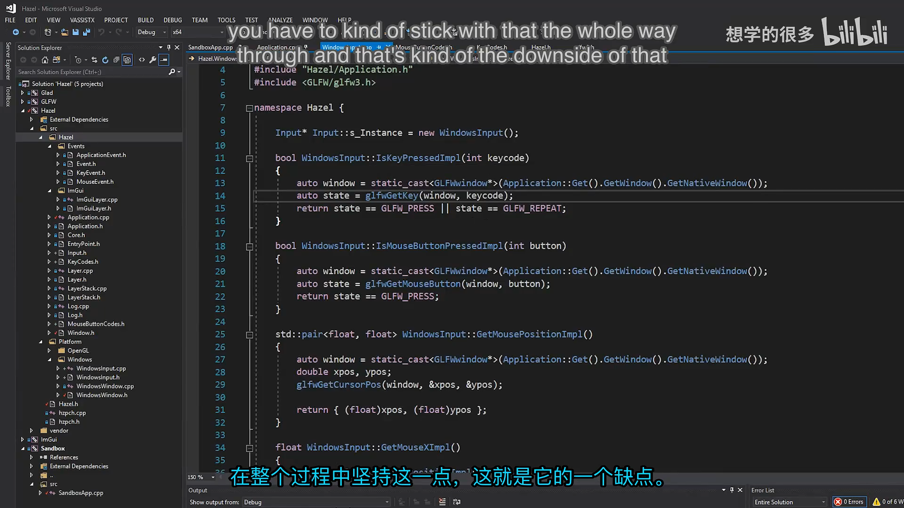
📷 运行时通过转换表适配不同后端键码
回到原视频 (00:14:14)
7.3 当前选择
当前仍使用 GLFW，而 HZ_KEY_* 的数值直接来自 GLFW。因此本讲不需要真正写转换函数：
- WindowsWindow 收到 GLFW 键码时可直接构造事件；
- WindowsInput 收到 Hazel 键码时可直接传给 GLFW。
未来接入不同后端时，再在平台边界增加转换表即可。
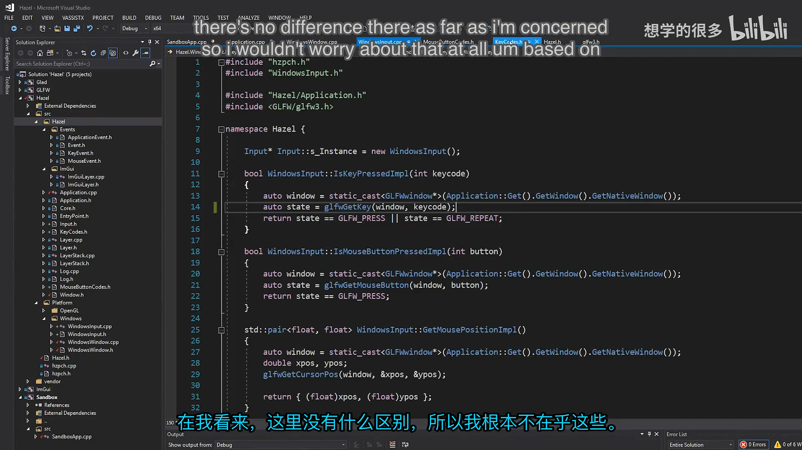
📷 当前 GLFW 数值一致，所以暂时无需运行时转换
回到原视频 (00:16:07)
8. 字母键码与 ASCII 的便利
(参考时间: 00:17:00)
GLFW 的字母键值直接对应 ASCII：
HZ_KEY_A = 65
HZ_KEY_B = 66
...
这带来一个实际便利：可以把字母键码转换为 char 并直接打印：
HZ_TRACE("{0}", (char)e.GetKeyCode());
按键输入 public 时，日志可以直接看到字符序列：
p
u
b
l
i
c
非 ASCII 键不会得到有意义字符。例如 Tab 对应的数字转换为 char 并不是可见的英文字符。
graph LR
A[HZ_KEY_A] --> B[65]
B --> C[char 'A']
C --> D[可直接打印与调试]
E[HZ_KEY_TAB] --> F[258]
F --> G[不属于普通 ASCII 可打印字符]
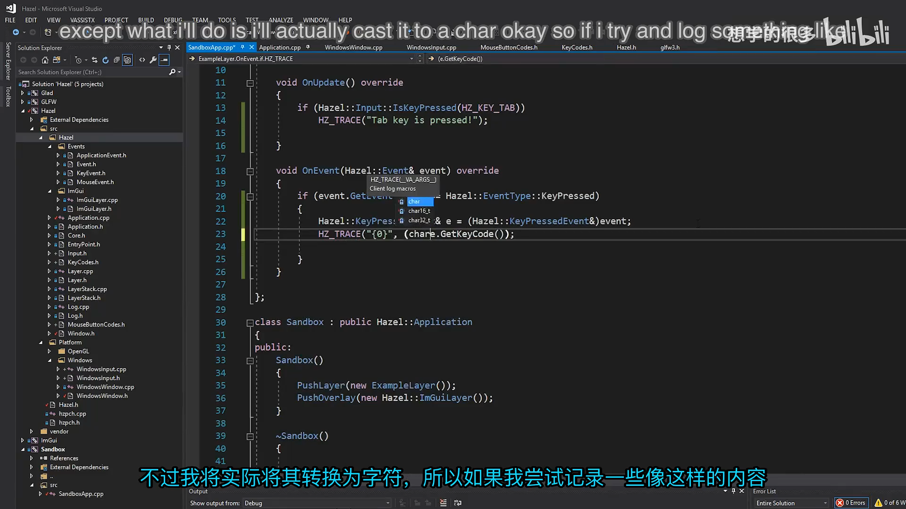
📷 使用字母键码与 ASCII 对齐的特性直接输出字符
回到原视频 (00:18:20)
9. 最终效果
ExampleLayer 现在同时支持两种输入路径：
Input::IsKeyPressed(HZ_KEY_TAB)：每帧轮询；e.GetKeyCode() == HZ_KEY_TAB：只在按键事件发生时处理。
轮询与事件都使用统一的 Hazel 键码，不再需要客户端包含 GLFW。
graph TD
A[客户端代码] --> B[HZ_KEY_TAB]
B --> C[Input Polling]
B --> D[KeyPressedEvent]
C --> E[WindowsInput]
D --> F[WindowsWindow Event]
E --> G[GLFW 后端]
F --> G
📷 轮询和事件现在都能使用 Hazel 键码
回到原视频 (00:20:30)
10. 本节结论
本讲完成了键码与鼠标码的第一层抽象：
- 识别出公共 API 直接暴露 GLFW 常量的问题；
- 新增
KeyCodes.h； - 新增
MouseButtonCodes.h； - 复制 GLFW 数值并重命名为
HZ_KEY_*、HZ_MOUSE_BUTTON_*； - 在
Hazel.h中统一公开这些头文件； - 客户端可以直接使用 Hazel 键码进行轮询和事件比较；
- 解释了编译时平台键值与运行时转换的取舍；
- 确认当前 GLFW 数值一致，因此暂时无需转换；
- 利用字母键码与 ASCII 对齐，直接输出输入字符进行验证。
Hazel 还没有完全摆脱 GLFW，但客户端 API 已经不再要求用户了解 GLFW。这是一种重要的边界调整：平台实现可以继续使用第三方库，公共接口则保持稳定、统一和可迁移。